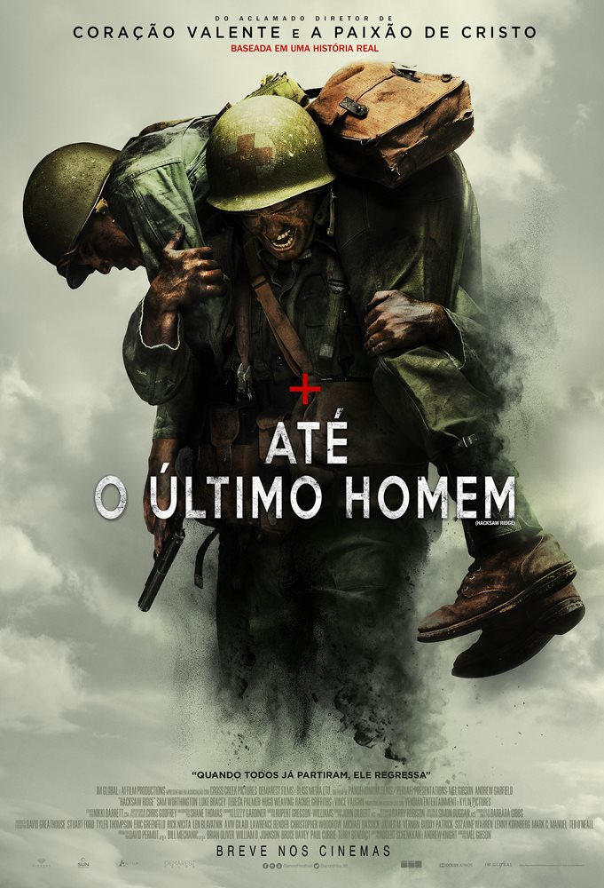

FILME: INTERESTELAR
SINOPSE:As reservas naturais da Terra estão chegando ao fim e um grupo de astronautas recebe a missão de verificar possíveis planetas para receberem a população mundial, possibilitando a continuação da espécie. Cooper é chamado para liderar o grupo e aceita a missão sabendo que pode nunca mais ver os filhos. Ao lado de Brand, Jenkins e Doyle, ele seguirá em busca de um novo lar.
TRAILER DO FILME
FILME: BOHEMIAN RHAPSODY
SINOPSE:Freddie Mercury, Brian May, Roger Taylor e John Deacon formam a banda de rock Queen em 1970. Quando o estilo de vida agitado de Mercury começa a sair de controle, o grupo precisa encontrar uma forma de lidar com o sucesso e os excessos de seu líder.
TRAILER DO FILME

FILME: O RESGATE DO SOLDADO RYAN
SINOPSE:Ao desembarcar na Normandia, no dia 6 de junho de 1944, o Capitão Miller recebe a missão de comandar um grupo do Segundo Batalhão para o resgate do soldado James Ryan, o caçula de quatro irmãos, dentre os quais três morreram em combate. Por ordens do chefe George C. Marshall, eles precisam procurar o soldado e garantir o seu retorno, com vida, para casa.
TRAILER DO FILME

FILME: ATÉ O ULTIMO HOMEM
SINOPSE:Acompanhe a história de Desmond T. Doss, um médico do exército americano que, durante a Segunda Guerra Mundial, se recusa a pegar em armas. Durante a Batalha de Okinawa ele trabalha na ala médica e salva cerca de 75 homens.
TRAILER DO FILME